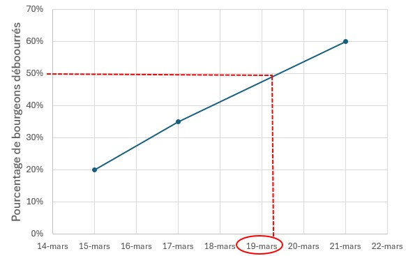

Suivi de la véraison de la vigne
Objectif
La détermination des principaux stades phénologiques permet de définir la précocité de la parcelle ou de la modalité étudiée. Par ailleurs, elle est indispensable aux calculs de certains indicateurs bioclimatiques ou des bilans hydriques.
Principe de la mesure
La véraison marque le début du processus de maturation des raisins, qui se terminera à la vendange.
La date de véraison est évaluée sur la base d’observations régulières réalisées sur des ceps représentatifs dans chaque zone suivie [1].
Réalisation de la mesure
Échantillonnage
Nombre d’observations
Il est nécessaire de faire les observations sur un minimum de 10 souches par zone homogène.
Ceps à observer
- Prendre des ceps représentatifs de la parcelle (ou les ceps qui sont observés par ailleurs), formés de manière définitive et en production.
- Exclure de la mesure les ceps malades et les ceps voisins des manquants.
- Laisser quelques ceps en bordure de rangs.
Organes à observer
Les baies observées sont celles des deux premières grappes rencontrées à partir de la base du sarment.
Sont exclues les baies issues de grappes portées par les gourmands, et les grappillons des entre-cœurs.
Mesure
Réalisation
L’échelle BBCH est l’échelle de référence à utiliser [2].
On considère qu’une baie est vérée si elle est molle. Ce critère permet une comparaison sans biais des variétés blanches ou rouges.
L’évaluation se fait par palpation à l’aveugle d’au moins 50 baies in situ, ou au laboratoire après prélèvement aléatoire, en alternant les faces de rang observées.
Le pourcentage de baies molles est ensuite calculé.
Pour certaines variétés il n’est pas possible de faire des prélèvements ponctuels des baies car les grappes sont trop compactes. Il est donc nécessaire de faire l’évaluation in situ sans prélèvement destructif.
Selon le cépage, les pellicules sont plus ou moins fermes, entraînez-vous pour appréhender le ramollissement pour chaque cépage.
L’observation visuelle de l’apparition de la couleur sur les cépages rouges est une méthode acceptable pour les comparaisons inter-annuelles d’un même cépage sur un même site.
Attention, le changement de couleur peut dans certaines situations être plus tardif que le ramollissement des baies, comme en 2003 sur Grenache noir dans le Sud de la France.
Outils
Pas d’outils disponibles à notre connaissance.
Période de mesure
à partir du moment où l’on observe au minimum 5 % de baies molles, faire au moins un passage supplémentaire avec au maximum une semaine d’intervalle de manière à avoir une observation après 50 % de baies molles
Il s’agit d’encadrer la date à laquelle 50% des organes ont atteint le stade à observer.
Aspects pratiques
La notation est assez rapide, 10 minutes sont nécessaires à une personne habituée pour évaluer le stade phénologique sur 50 baies.
Traitement des résultats
Les noms des variables dans le référentiel de la crop ontology VITIS356 sont indiqués entre parenthèse, avec un lien vers l’identifiant de la variable.
Variables brutes
Les données brutes sont le pourcentage de véraison.
La correspondance avec le stade BBCH se fait avec le chiffre des dizaines : 10% de véraison correspond au stade BBCH81, 20% au stade BBCH82 etc.
Variables calculées
La date du stade est calculée par interpolation entre les valeurs observées avant et après 50% des effectifs observés ayant atteint le stade.

La date de mi-véraison est la date calendaire où le seuil de 50% de baies molles est atteint (VER_50).
Interprétation des résultats
Pour les comparaisons inter-annuelles, la date calendaire de mi-véraison peut être exprimée en nombre de jours depuis le début de l’année (DOY_VER).
Par exemple, le 7 août 2024 est le jour 220 de l’année.
Compléments d’information
Ressources complémentaires
Poster des stades phénologiques de la vigne sur le site IFV.
Stades phénologiques repères de la vigne, fiche de l’Agroscope de Changins.
film du bourgeon au raisin, 2004